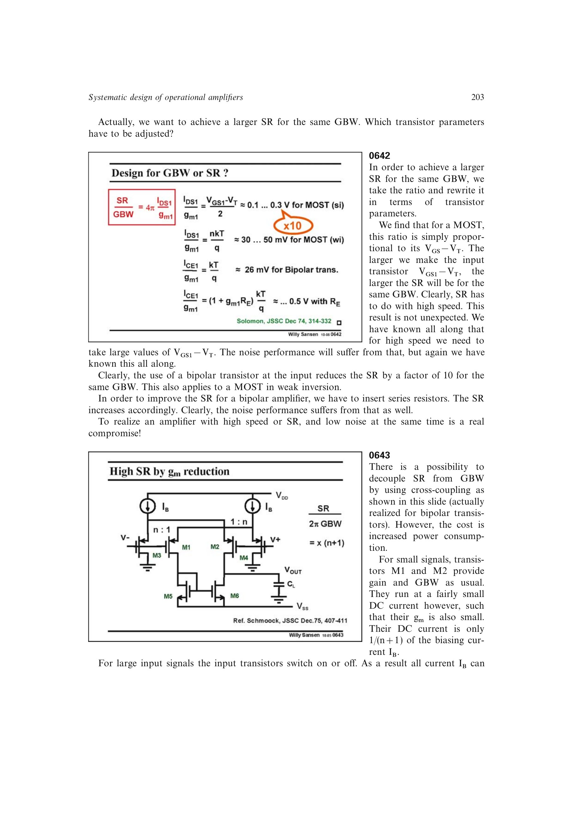

交叉耦合或动态电流转向可让输入级小信号时只用总偏置的一小部分建立 g_m，大信号时却把近乎全部偏置送往补偿节点，使 SR/GBW 提高约 n+1 倍。
代价是正常小信号工作时大部分直流电流不产生有用跨导，因此功耗明显增加；这是一种用功耗解耦 SR 与 GBW 的技术。
第 12 章给出另一条独立路线：用交叉耦合四管输入单元产生扩张型差分电流。替换对称 OTA 的普通差分对后，小信号 GBW 基本不变，而大信号输出电流和压摆率显著增加。
来源：第 6 章 pp. 203-204，0643；第 12 章 pp. 341-343，129-1213。
